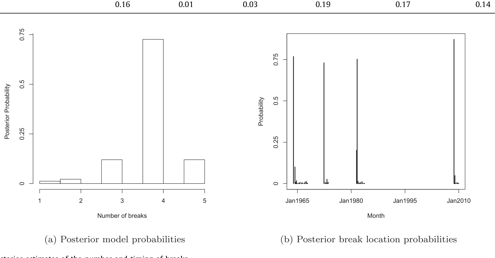
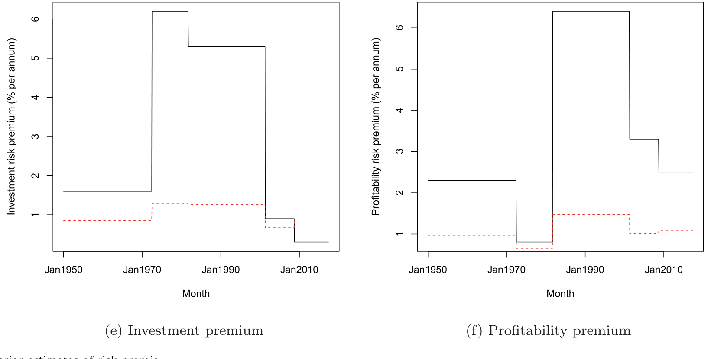
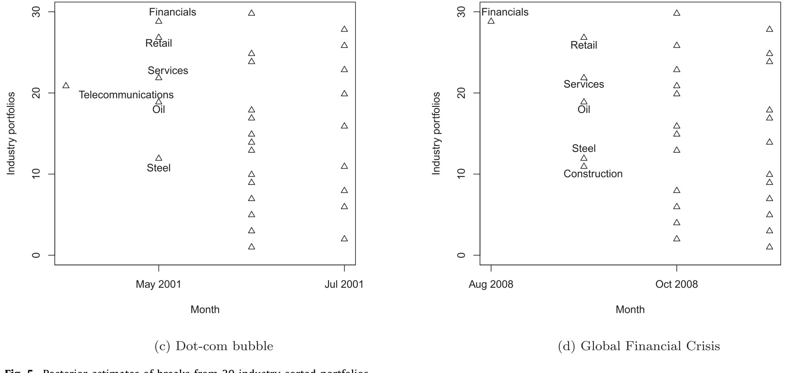
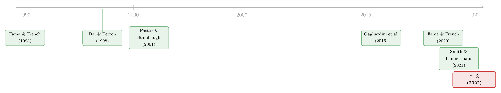

风险溢价，是「消失」了，还是「断」掉了？
本文读的是 Smith & Timmermann (2022, Journal of Financial Economics)：用一种新的贝叶斯面板突变方法，在 1950–2018 年两万多只美股的横截面里找「断点」，结论是——规模、价值、投资三个风险溢价到样本末期已经统计上与零无异；市场、动量、盈利能力溢价虽然也在下行，但仍显著为正。作者还把「风险溢价会断」这件事本身做成了一个能定价的新因子。
1 一个让基金经理睡不着的问题
先讲一个让无数「价值基金」和「小盘基金」夜不能寐的事实。
过去三十年，华尔街围绕几个股票特征（characteristics）盖起了一整座产业：账面市值比（book-to-market）、市值规模（size）、动量（momentum）、投资（investment）、盈利能力（profitability）。每一个特征背后，都曾对应着一个「白捡的」风险溢价（risk premium），于是有了小盘基金、成长基金、价值基金、动量基金——countless mutual funds。这些策略好不好，取决于两件事：溢价有多大，以及它稳不稳。
可问题恰恰出在「稳」上。一个高配价值股的基金，如果价值溢价这些年早就缩水甚至归零了，那它的「信仰」就成了一笔糊涂账。于是一个尖锐的问题浮出水面：
这些经典的风险溢价，是不是已经「消失」了？
这并不是个新问题。早在 1993 年，Blanchard 就写过一篇题目直白得近乎挑衅的文章——The vanishing equity premium（消失的股权溢价）。而到了 2021 年，连 Fama 和 French 自己都在 The value premium 里承认：价值溢价确实大幅下滑了。
但 Fama-French (2021) 给出的结论是「打了折」的。他们用的是一小撮组合（a handful of portfolios），在 1992 年这个事先指定的日期把样本切成两半，然后做检验。结果有点尴尬：他们既无法拒绝「价值溢价在 1992 前后保持不变」，也无法拒绝「1992 年之后价值溢价为零」。换句话说，数据噪声太大，他们手里的检验功效（power）太低，问不出一个干脆的答案。
这里藏着三个隐患：(1) 只用少数组合，丢掉了个股横截面里的海量信息；(2) 用组合本身可能掩盖了底层个股真正的风险—收益关系（Lewellen et al., 2010 早就警告过这件事）；(3) 断点日期 1992 是人为拍脑袋定的，没人验证它到底是不是数据支持的那个断点，更没人问「会不会不止一个断点」。
这篇论文要做的，就是把这三个隐患一次性补上。
2 核心一招：让「整个横截面」一起告诉你断点在哪
理解这篇文章，只需要抓住一个核心：用大横截面的力量，把模糊的断点估计变清晰。
月度的风险溢价本身噪声极大——这正是 Fama-French (2021) 功效不足的根源。但作者的想法很巧：假如某次风险溢价的跳变是普遍的（pervasive），即它同时砸向横截面里成千上万只股票，那么我们就可以同时用全体股票的信息去定位这一次跳变。噪声会在横截面上互相抵消，而真正的「断点」信号会被反复确认、变得无比清晰。
这就是为什么作者刻意只盯住「普遍且离散」的突变（breaks），而不是去追那些零碎的、局部的小波动——前者才能调动整个横截面的火力。
2.1 从 Fama-French (2020) 借来的一块「积木」
那怎么把个股横截面和「因子」联系起来？这里用到了 Fama 和 French (2020) 的一个漂亮洞见：把 Fama-MacBeth 截面回归一期一期地「摞」起来（stacking），本身就等价于一个因子模型。
具体地，考虑对个股超额收益 \(r_{it}\) 做如下回归：
$$ r_{it} = \alpha_i + r_{zt} + \lambda_t' X_{it-1} + \varepsilon_{it}, \quad \varepsilon_{it} \sim N(0, \sigma_i^2). $$
这里 \(X_{it-1}\) 是公司 \(i\) 在 \(t-1\) 时点的特征向量（市值、账面市值比……），\(\lambda_t\) 是第 \(t\) 期截面回归的斜率。Fama-French (2020) 指出：这些斜率估计值 \(\lambda_t\) 其实就是因子收益——它对应着一组「事先指定的、随时间变化的因子载荷（即特征本身）」的多空组合收益。而 \(r_{zt}\) 是当所有特征都取零时、对所有股票都共同的那部分收益（用 Pesaran (2006) 的共同相关效应框架从截面均值里提取）；\(\alpha_i\) 则捕捉个股 \(i\) 的错误定价（mispricing）。
接着，一个自然的问题是：如果风险溢价 \(\lambda\) 在某些「时段（regime）」内是常数、但会在 regime 之间跳变呢？那我们就不该用整段样本去算一个平均的 \(\lambda\)，而应该在每个 regime 内部分别估计。于是作者把上式推广成允许突变的版本——这是全文真正的发动机：
注意这里的关键设计：不只是溢价 \(\lambda_k\) 可以断，截距 \(\alpha_{ik}\)（错误定价）和波动率 \(\sigma_{ik}\)（特异波动）也都允许在断点处跳变。所以「断点」是个三位一体的事件：溢价变、定价偏误变、风险水平也变。
2.2 断点的个数和位置，都交给数据去定
最妙的是，断点的个数 \(K\) 和位置 \(\tau = (\tau_1,\dots,\tau_K)\) 都不是事先指定的，而是用贝叶斯面板突变方法从数据里推断出来的（建立在 Smith and Timmermann (2021)「Break risk」的框架上）。这一刀，正好切中了 Fama-French (2021) 把断点钉死在 1992 年的软肋。
先验（prior）的选择也很有讲究，处处透着「经济上要合理」的克制： - 斜率系数 \(\lambda_k\) 用高斯先验，收缩超参数 \(\sigma_\lambda = 0.08\)（中等收缩，跟随 Wachter and Warusawitharana, 2009）； - 错误定价 \(\alpha_{ik}\) 先验地居中于零、\(\sigma_\alpha = 5\%\)，体现「怀疑但不排除」错误定价的存在；并且把截距和残差波动绑定起来，避免出现「高 alpha + 低波动」这种隐含天文数字夏普比率的近似套利机会（Shanken, 1992; Pástor and Stambaugh, 1999）； - 断点平均每二十年发生一次（也试了十年的先验）。
这里和资产定价「贴现率」的大叙事是相通的：风险溢价说到底就是贴现率，而贴现率会随时间漂移正是现代资产定价的中心议题（关于这一点，可参见《贴现率：资产定价的中心议题》）。本文的贡献，是把「漂移」具体化成了几次可定位、可检验的离散跳变。
3 数据与那四次「断点」
数据是结结实实的：23,664 只美股，覆盖 NYSE、AMEX、NASDAQ，月度，区间 1950 年 1 月到 2018 年 6 月，来自 CRSP、Compustat 和 I/B/E/S。基准的六因子模型（six-factor model）回归用了六个滞后特征：市场 beta、规模、账面市值比、动量、投资、盈利能力，全部按 Green et al. (2017) 的口径测量。
那么，数据到底找到了几次断点？
答案是四次。大约 75% 的后验权重落在「四个断点」的模型上，剩下的 25% 大致均匀地分给了三个和五个断点的模型。四个断点的位置分别是：
- 1972 年 7 月——对应 1970 年代初的石油价格冲击；
- 1981 年 10 月——对应美联储货币政策机制的转变；
- 2001 年 6 月——对应互联网泡沫（dot-com bubble）的破灭；
- 2008 年 10 月——对应全球金融危机（GFC）。

Figure 1: Posterior estimates of the number and timing of breaks
这四个日期没有一个是事先输入的，全部是数据自己「认领」的——而它们却精准地落在了几次最重大的宏观事件上。作者还指出，这些断点同时伴随着市场组合股息价格比（dividend-price ratio）的大幅移动；从资产定价的角度看，估值比率的剧烈变动，恰恰正是风险溢价跳变时该出现的现象。这是对「这些断点是真的」的一个强有力的旁证。
4 于是反转出现：哪些溢价「断没了」，哪些还活着
把溢价在四个断点切出的五个 regime 里分别估出来，画成一条随时间演变的轨迹，故事一下子就清楚了。

Figure 2: Posterior estimates of risk premia
结论可以分成两组，泾渭分明：
第一组——已经「消失」的： 市场、价值、规模三个溢价都随时间系统性地下行，其中规模和价值的跌幅尤其触目。在最后一个（2008 年后）regime 上做检验，无法拒绝「规模、价值、投资三个风险溢价已经跌到零」的原假设。更进一步，作者也无法拒绝规模和价值溢价在过去近七十年里是单调递减（monotonically declining）的。换句话说，对这三个特征而言，「溢价消失了」不是危言耸听，而是数据支持的结论。
第二组——还活着的： 市场溢价虽然也在长期下行，但仍然显著为正；动量溢价在 1970 年代初短暂回落后又恢复了，如今回到了接近 1950 年代的水平；盈利能力溢价亦然。对市场、动量、盈利能力，作者强烈拒绝「它们在最后 regime 为零」以及「它们随时间均匀下降」的假设。
这就把 Fama-French (2021) 那个含糊的「无法拒绝」磨利成了一把手术刀：价值和规模溢价的确实质性地、可能单调地走向了零；但并非所有溢价都死了——动量和盈利能力反而相当顽强。
这与「异象在被发现后逐渐衰减」的大讨论直接相关，但视角不同：本文说的不是「异象被套利者吃掉了」，而是溢价在几个离散的宏观断点处被重置。关于异象衰减究竟源于套利还是基本面，可参见《异象的消退，是被「套利」吃掉了，还是基本面自己缩水了？》。
值得一提的是，波动率也在「断」：作者发现，错误定价（mispricing）的证据在样本前半段强得多，2001 年后显著减弱，且在流动性差的微型股（microcaps）里远比大股票严重。这呼应了「市场随时间变得更有效」的直觉。
5 真正的升华：把「会断」本身做成一个因子
到这里，文章其实已经可以收尾了。但真正关键的一步在于——作者没有停在「描述溢价怎么变」，而是追问：「风险溢价会不稳定」这件事本身，是不是一种被市场定价的风险？
逻辑链条是这样的：不同特征的股票，对「溢价跳变」的暴露程度不一样；那么它们对「溢价不稳定」这一风险的脆弱性也该不一样。如果不稳定性风险（instability risk）在横截面上被定价，那么对它暴露更大的股票，就该赚取更高的溢价。
于是作者构造了一个断点风险因子（break risk factor）：用「有断点的模型」和「没有断点的模型」对个股收益预测之差，来度量每只股票对断点的敏感度，再据此排序分组。结果非常干净：
- 按断点敏感度排序的组合，收益单调递增；最高敏感度的那一档（quintile）比最低档每年多赚
3.4%，且统计显著。 - 在控制了市场 beta、规模、价值、动量、投资、盈利能力等特征的 Fama-MacBeth 回归里，这个「断点特征」获得的显著性与投资特征相当，并且比规模、账面市值比、动量、盈利能力都更显著。
换句话说，这个白手起家的「不稳定性」因子，其溢价可以和那些教科书因子相提并论。这是全文最漂亮的升华：它把一个关于「时变」的实证发现，反手做成了一个关于「定价」的资产定价命题。
那么，谁最怕断点？作者用行业和风格组合做了细致的解剖：电信、公用事业、石油、商业设备、金融业的股票断点敏感度最高；批发、纺织、采矿、出版、餐饮则最低。小公司比大公司敏感；同等规模下价值股比成长股敏感；保守投资、稳健盈利的公司比激进投资、盈利疲弱的公司更敏感；输家股票比赢家股票敏感。

Figure 5: Posterior estimates of breaks from 30 industry-sorted portfolios
更有意思的是「谁先被波及」的领先—滞后（lead-lag）关系：金融、电信、零售、服务、钢铁、化工、石油、建筑往往是最先被断点击中的行业；而且这个领先角色还会随事件切换——金融业在 1929 年股灾和 GFC 里领先，电信在互联网泡沫破灭时领先，石油在 1973 年领先。一个时代的注脚是：信息扩散的速度在加快——从「第一个被波及的行业」到「最后一个」之间的时滞，随时间明显缩短了。
6 文献脉络
把这条线索捋一捋，能看清这篇文章站在哪里。
最早的源头有两支。一支是「股权溢价会变」的宏观叙事：Blanchard (1993) 喊出「消失的股权溢价」，Fama and French (2002) 用股息和盈利增长重估股权溢价。另一支是「结构突变」的计量工具：Bai and Perron (1998) 奠定了估计和检验多重结构突变的经典方法。
把这两支接上的，是 Pástor and Stambaugh (2001)——他们在长达约 150 年的美股数据里识别出多达 15 个股权溢价的结构突变，并用过渡 regime 把相邻 regime 连起来。Bekaert et al. (2002) 则在收益模型里找共同断点，并把它们和全球股市一体化挂钩。

到了横截面这一侧，故事的基石是 Fama and French (1993) 的三因子模型，以及后来一长串「特征定价」的工作（Berk et al., 1999；Novy-Marx, 2013；Zhang, 2005……）。而把横截面回归和因子模型在形式上打通的，是 Fama and French (2020)——这正是本文的方法论起点。同时，Gagliardini et al. (2016)、Freyberger et al. (2020)、Gu et al. (2020)、Adrian et al. (2015) 等近年的研究，都从不同角度记录了风险溢价随时间剧烈变化的事实。
这篇文章的直接前身，是作者自己的 Smith and Timmermann (2021)「Break risk」——那篇在现值（present value）框架下研究断点如何影响收益的时间序列可预测性。而本文的转身在于：把同一套断点思想，从时间序列搬到了大横截面，既磨利了 Fama-French (2021) 关于价值溢价的模糊结论，又催生出一个能定价的不稳定性因子。它处在「结构突变计量 × 横截面因子定价」两条河流的交汇处。
7 评论与延伸（Q&A + 研究方向）
(a) 几个可能的疑问
Q：「风险溢价消失」会不会只是把样本切碎之后、每段都没功效的统计假象？
恰恰相反，本文的整个设计就是为了提高功效。它不是事先把样本切碎，而是用全体个股横截面同时定位断点，让噪声互相抵消；四个断点拿到约 75% 的后验权重，且都落在重大宏观事件上。正因为功效更高，它才敢给出 Fama-French (2021) 给不出的「拒绝/不拒绝」判断。
Q：断点日期是不是「事后诸葛亮」——先知道有石油危机、GFC，再去凑日期？
断点的个数和位置完全由数据和先验决定，没有把任何事件日期喂进模型。它们自发地落在 1972、1981、2001、2008，并且伴随股息价格比的大幅移动——这是独立的旁证，而非循环论证。
Q：「普遍断点（pervasive breaks）」这个假设是不是太强了？
它确实强，但作者做了两手准备：基准模型加入共同成分 \(r_{zt}\) 吸收共同波动，并用 Pesaran (2006) 的潜在共同因子 \(f_t\) 吸收残余相关；数据也支持「条件于共同因子后残差不相关」。此外正文后半还把框架推广到非共同断点（noncommon breaks），允许断点只命中横截面的某个子集。
Q：这和「时变 beta」的文献有什么区别？
时变 beta（如条件 CAPM）通常让载荷平滑地随时间变；本文让溢价 \(\lambda_k\) 在少数几个时点离散地跳变，而把载荷（特征）当作给定。两者互补：前者刻画连续漂移，后者刻画 regime 重置。关于时变载荷被长期低估的风险，可参见《时变的 beta，被低估了二十年的风险》。
Q：「断点风险因子」会不会只是规模或价值因子换了个马甲？
在控制了市场、规模、价值、动量、投资、盈利能力之后，断点特征在 Fama-MacBeth 回归里仍获得显著性，且比规模、账面市值比、动量、盈利能力更显著——说明它携带了这些经典特征之外的增量信息，不是简单的重新打包。
Q：既然规模、价值溢价都「消失」了，是不是说这些异象本来就是数据挖掘？
本文不下这个结论。它说的是溢价在几个宏观断点处被重置乃至归零，而非「从来不存在」——毕竟早期 regime 里溢价是实打实显著的。这区别于「异象从一开始就是 p-hacking」的叙事。
(b) 几个可能的研究问题与提案
1. 把这套断点方法搬到公司债横截面 【经济故事】公司债的信用利差里同样含有规模、流动性、久期等特征溢价，而这些溢价在 2008、2020 等危机点很可能经历了离散重置。把「会断」做成一个公司债因子，能直接检验信用市场的不稳定性是否被定价。 【可行性】中。数据可用（TRACE 成交 + Mergent FISD），但公司债横截面更稀疏、成交不连续，需先处理流动性度量的口径问题；面板突变方法可直接迁移。
2. 外资持有人与风险溢价断点的关联 【经济故事】若某些断点（如 2008）是由跨境资本的撤离/重配触发的，那么外资持有比例高的股票/债券，其溢价断点应来得更早、更剧烈。这能把「断点的经济驱动」从宏观事件细化到持有人结构。 【可行性】中。需要 13F、TIC 或个券层面的外资持有数据；识别上可用断点的领先—滞后结构做证据，但「外资驱动」与「外资跟随」的因果分离较难。
3. 断点风险因子的可交易性与交易成本 【经济故事】3.4% 的年化利差听起来诱人，但断点敏感度高的多是小盘、低流动性股票，扣掉冲击成本后还剩多少？这关系到这个因子是「纸面 alpha」还是「真金白银」。 【可行性】高。用 Novy-Marx and Velikov (2015) 式的交易成本框架对断点敏感度组合做净收益核算即可，数据现成。
4. 把「断点平均每 20 年一次」的先验换成宏观状态变量驱动 【经济故事】本文用固定的时间间隔先验。但断点更可能由货币政策机制、波动率水平等宏观状态触发。让断点强度随这些状态变量变化，能把「何时会断」也内生化。 【可行性】中。需要在贝叶斯面板框架里引入状态依赖的断点 hazard，计算量上升，但方法论上是 Smith and Timmermann (2021) 的自然延伸。
5. 跨国检验：风险溢价的「消失」是美国独有的吗？ 【经济故事】若价值、规模溢价在欧洲、日本、新兴市场也同步归零，则指向全球性的（如套利资本流入），否则指向美国市场结构的特殊变化。 【可行性】中。数据可得（如 Hou-Xue-Zhang 的国际样本），但各国个股横截面深度差异大，断点定位的功效会参差不齐。
8 我的判断
这篇文章最让我欣赏的，是它把一个看似只能含糊作答的问题，靠方法论的升级问出了清晰的答案。Fama-French (2021) 受困于少数组合和指定断点，只能说「无法拒绝」；本文用整个个股横截面 + 数据驱动的断点定位，把同一个问题变成了可以干脆拒绝或不拒绝的检验。而「把不稳定性本身做成定价因子」这一手，则把一篇本可以止步于「描述性」的论文，提升成了「有资产定价含义」的论文——这是真正的贡献所在。
对识别，我有两点保留。其一，「普遍断点」假设虽有共同因子托底，但风险溢价的变化未必都是离散跳变，也可能是平滑漂移；如果真实过程是连续的，「四个断点」就只是对一条光滑曲线的分段近似，断点日期的「精准命中」也可能部分是事后解读。其二，断点风险因子的经济内涵还略显黑箱：它用「有断点模型 vs 无断点模型」的预测之差来定义，这更像一个统计构造而非有清晰风险来源的因子；3.4% 的利差能否在扣除交易成本后存活、它到底补偿了什么宏观风险，文章并未完全讲透。
后续我最想看到的，是把这套方法搬到信用市场：公司债的特征溢价在危机点的离散重置，几乎是为这套方法量身定做的检验场。如果「断点会被定价」在债市同样成立，那这篇文章的方法论价值，就远不止于回答「股票风险溢价是否消失」这一个问题了。
参考文献
- Bai, J., & Perron, P. (1998). Estimating and testing linear models with multiple structural changes. Econometrica 66(1), 47–78.
- Bekaert, G., Harvey, C. R., & Lumsdaine, R. L. (2002). Dating the integration of world equity markets. Journal of Financial Economics 65(2), 203–247.
- Blanchard, O. J. (1993). The vanishing equity premium. Finance and the International Economy.
- Fama, E. F., & French, K. R. (1993). Common risk factors in the returns on stocks and bonds. Journal of Financial Economics 33(1), 3–56.
- Fama, E. F., & French, K. R. (2002). The equity premium. Journal of Finance 57(2), 637–659.
- Fama, E. F., & French, K. R. (2020). Comparing cross-section and time-series factor models. Review of Financial Studies 33(5), 1891–1926.
- Fama, E. F., & French, K. R. (2021). The value premium. Review of Asset Pricing Studies 11(1), 105–121.
- Gagliardini, P., Ossola, E., & Scaillet, O. (2016). Time-varying risk premium in large cross-sectional equity data sets. Econometrica 84(3), 985–1046.
- Green, J., Hand, J. R., & Zhang, X. F. (2017). The characteristics that provide independent information about average US monthly stock returns. Review of Financial Studies 30(12), 4389–4436.
- Lewellen, J., Nagel, S., & Shanken, J. (2010). A skeptical appraisal of asset pricing tests. Journal of Financial Economics 96(2), 175–194.
- Pástor, L., & Stambaugh, R. F. (1999). Costs of equity capital and model mispricing. Journal of Finance 54(1), 67–121.
- Pástor, L., & Stambaugh, R. F. (2001). The equity premium and structural breaks. Journal of Finance 56(4), 1207–1239.
- Pesaran, M. H. (2006). Estimation and inference in large heterogeneous panels with a multifactor error structure. Econometrica 74(4), 967–1012.
- Shanken, J. (1992). The current state of the arbitrage pricing theory. Journal of Financial Economics 47(4), 1569–1574.
- Smith, S. C., & Timmermann, A. (2021). Break risk. Review of Financial Studies 34(4), 2045–2100.
- Smith, S. C., & Timmermann, A. (2022). Have risk premia vanished? Journal of Financial Economics 145(2), 553–576.